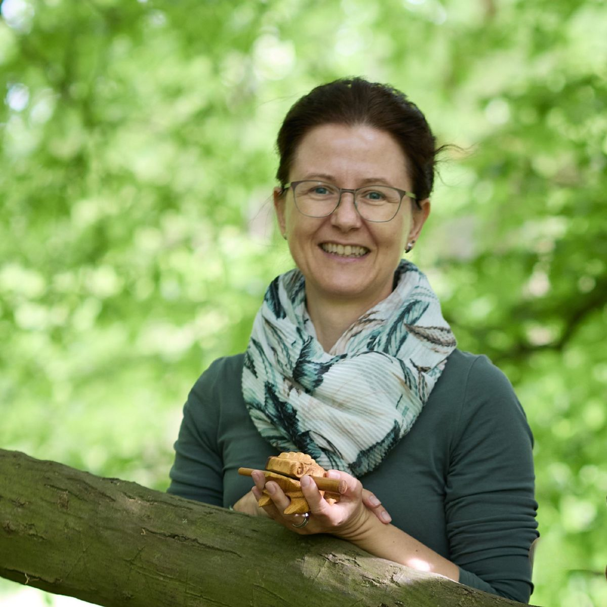

Nadine Rau
Yin Yoga · Achtsamkeit · PräsenzNadine arbeitet seit Jahren mit Menschen, die lernen wollen, wieder bei sich zu sein – nicht durch mehr Disziplin, sondern durch weniger Widerstand. Ihr Hintergrund in Yin Yoga und Achtsamkeitspraxis hat ihr gezeigt: Der Körper weiß oft schon, was er braucht. Er braucht nur einen Rahmen, in dem er ankommen kann.
In Natur und Klang übernimmt sie die Begleitung im achtsamen Naturerleben – das bewusste Innehalten, das Wahrnehmen, das stille Gehen. Nicht als Technik, sondern als Einladung.
„Ich glaube nicht an Methoden, die versprechen. Ich glaube an Räume, die ermöglichen."